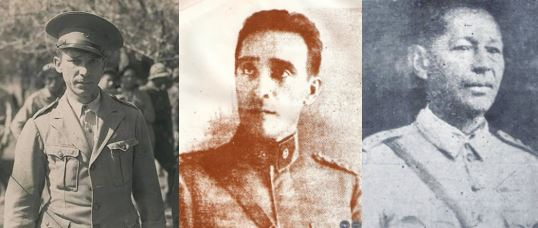

- Teniente Coronel de Caballería Alfredo Ramos Ríos
Nació el 17 de marzo de 1903, en la ciudad de San Juan Bautista de las Misiones.
Fue fundador de fortines en la pre guerra ante la inminente guerra con Bolivia, el Capitán Alfredo Ramos fue comisionado a las Misiones para la selección de reclutas con quienes completar los cuadros del Regimiento de Caballería Nº 2 "Cnel. Toledo".
En diciembre de 1932 asume el mando del R.C. 1 "Valois Rivarola" el cual reorganizó en seis cuadros, se constituyó en una unidad de élite que inició su inigualada campaña de victorias. A su mando, el Regimiento de Caballería Nº 1 “Coronel Valois Rivarola” recupera su moral.
El Mayor Ramos fue condecorado con la Cruz del Chaco.
Falleció en Asunción en 1991, estuvo casado con Luisa Abbate.
- General Juan Bautista Ayala
Nace en Pilar (Ñeembucú), el 24 de junio de 1889 quien tendría una gran actuación en la Guerra del Chaco.
Fue uno de los primeros oficiales paraguayos que conocieron el suelo chaqueño, pues ya en 1921 estuvo en esta región del país comisionado para verificar el avance boliviano en la zona del Pilcomayo.
Realizó una brillante actuación con los primeros planes operativos del ejército paraguayo. Iniciadas las hostilidades, cumplió una excelente labor en la organización de la movilización y aprestamiento de nuevas unidades y apoyo logístico.
En la post guerra, ya General de Brigada, Ayala fue Ministro de Guerra y Marina en el gabinete del Dr. Félix Paiva, y Comandante en Jefe de las FF.AA. de la Nación. Embajador ante el gobierno de los EE.UU. de América, integró la Delegación paraguaya a la Conferencia de San Francisco, que dio por resultado la creación de las Naciones Unidas, en 1945.
Falleció en 1981; estuvo casado con Juana Perrier.
- Teniente 1° Manuel Irala Fernández
Nace el 1 de Junio de 1893 en Concepción un personaje que venía tocado para ser leyenda, el pueblo paraguayo le daría su inmortal sobrenombre: «Yakaré Valija».
El Tte. Irala Fernández se destacó durante la Guerra del Chaco por sus patrullajes lejanos en la retaguardia enemiga, fue un gran conocedor del suelo chaqueño.
Su máximo actuar fue en la Batalla de Fortín Toledo, en donde prácticamente sólo se escabulló tras las líneas enemigas y como los héroes de nuestra gran epopeya del 70, capturó a todo un escuadrón.
Yacaré Valija lleva ese mote porque durante la Revolución de 1922 se introdujo a la línea enemiga de manera desapercibida y es ahí que encuentra una valija de piel de yacaré (cocodrilo), la maleta contenía un mapa, ubicación del resto de los campamentos y un cuaderno con miles de datos anotados, pueblo por pueblo.
Fue el mayor Félix Cabrera quien lo felicitó después de aquella misión tan importante y expresó: "Nde Manuel, le entraste como yacaré a la valija".
Luego de la guerra se casó y vivió hasta su muerte ocurrida el 2 de abril de 1979 en la ciudad de Luque, ciudad que le otorgó como homenaje póstumo, el título de "Hijo dilecto".